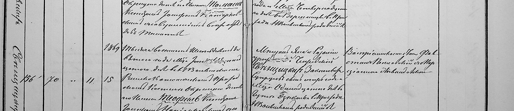
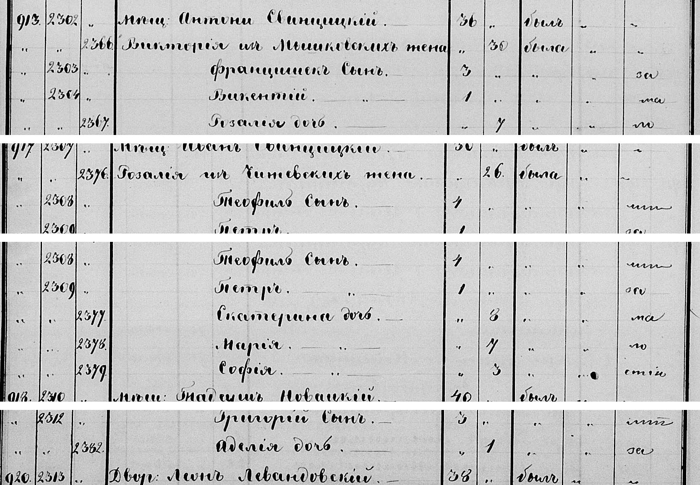
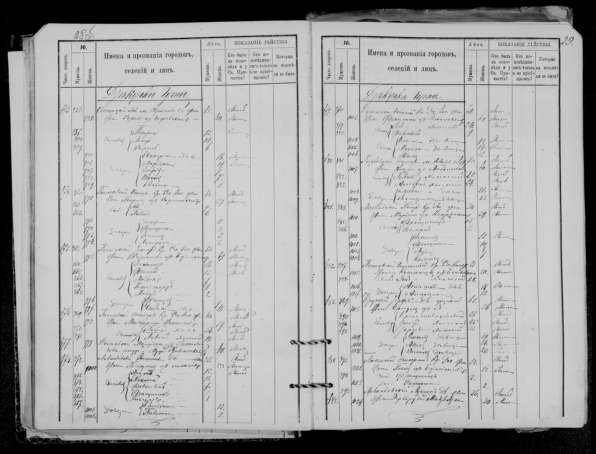
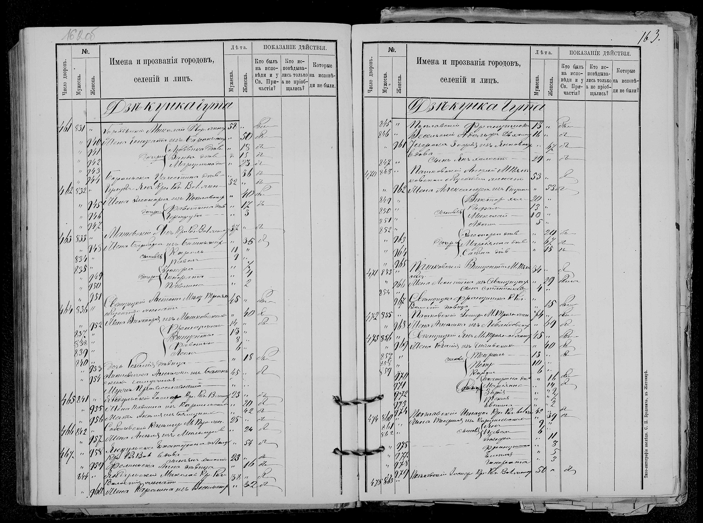
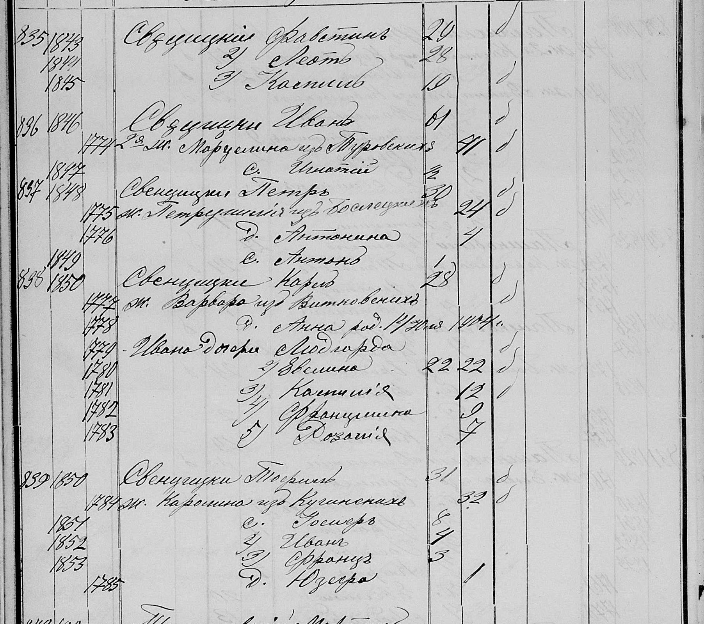
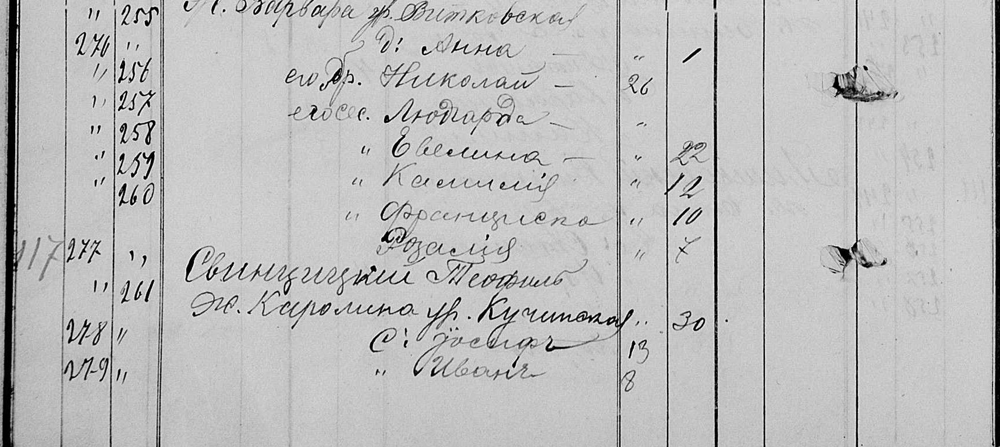
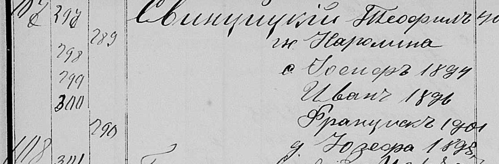
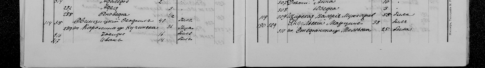
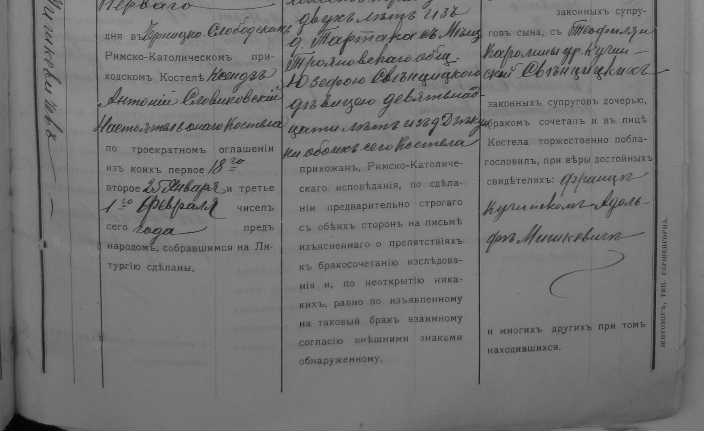
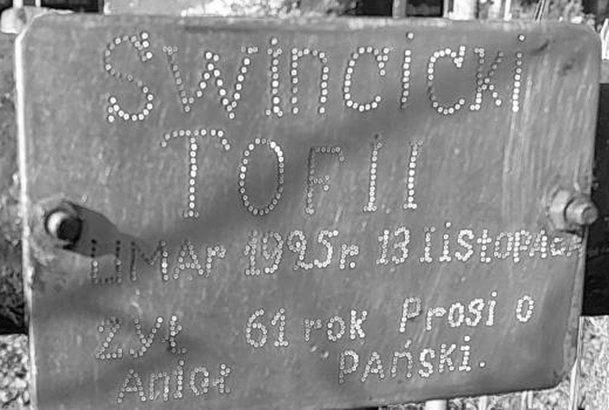

Теофіль Свінціцький¶
1869–1925
Family¶
Камілія Свінціцькаb. 1892 Юзефа Свінціцькаb. 1893 Йосип Свінціцькийb. 1894 Франциска Свінціцькаb. 1895 Іван Свінціцькийb. 1896 Розалія Свінціцькаb. 1897 Франциск Свінціцькийb. 1901 Анна Свинцицкаяyears unknown Антонина Свинцицкаяyears unknown Томаш Свинцицкийyears unknown Эмилия Свинцицкаяyears unknown
Маріанна Свінціцькаb. 1865 Кароль Іванович Свінцицький1876–1938 Францішек Свінціцькийb. 1880 Евелина Свѣнцицкаяb. 1882 Камілія Свінціцькаb. 1892 Франциска Свінціцькаb. 1895 Розалія Свінціцькаb. 1897 Екатерина Свинцицкаяyears unknown Зофія Свинцицкаяyears unknown Казимир Свинцицкийyears unknown Людгарда Свенцицкаяyears unknown Марія Свиньцицкаяyears unknown Маріянна Свинцицкаяyears unknown Николай Свинцицкийyears unknown Петр Свинцицкийyears unknown Софія Свинцицкаяyears unknown Текла Свинцицкаяyears unknown
Hypotheses¶
Юзефа Свінціцька (≈1895, з д. Дзикунки), наречена Діонізія Мішкевича 1.II.1915, і її батьки Теофіль і Каролина з Кучинських Свінціцьких — з роду Свінціцьких Гути Чудновської (гілка Йосиповичів,...Closed · H0013 Свінціцькі Дзикунки зі сповідного розпису 1900–1908 (ЦДІАК 1045-2-924, скани 0145–0148): Карл «род. 1876 г. №344» — це Кароль Іванович 1876 р. н. (можливо, брат Константина); Антон 58 з Вікторією/...Closed · H0019 Кароль Іванович 1876 р. н. () — син Яна й Розалії з Чижевських () і брат Феофіла, а не брат Константина (сина Яна й Марцеліни з Багинських)Closed · H0020 Записи хрещень 1863–1869 у ДАЖО 178-3-150 (Новоград-Волинський костел) з прізвищем Свѣнцицкій — діти й воспріємники ще не зв'язаних родин: Казимир і Маріанна з Яндольських (Гута Середня), Антоній...Open — searching · H0042
Life¶
-
11 June 1869
Birth · с. Дзикунка1 · hypothesis H0042
Гута Дзекунка (Дзикунка); хрещений 15.06.1869 у Новоград-Волинському костелі

- 15 June 1869 Baptism1 · hypothesis H0042 Новоград-Волинський костел (кандидат); народжений 11.06.1869, Гута Дзекунка
-
1870
Residence · с. Дзикунка2 · hypothesis
Гута Дзикунка, сповідний розпис 1870: двір Івана: дочка Теодила 1 (ім'я читається «Теодила», можливо Теофіла) (вік 1)

-
1873
Residence · с. Дзикунка3 · hypothesis
Гута Дзикунка, сповідний розпис 1873: двір 917: Теофилъ сынъ 4 (у розписі 1884–85 — 13)

-
1874
Residence · с. Дзикунка4 · hypothesis
Гута Дзикунка, сповідальний розпис Новоград-Волинського костелу, двір 937, №2317: у дворі Івана Войцеховича Свинцицкого (31) і Розалії з Читевських (27) син Теофіл, 5 років

-
1877
Residence · с. Дзикунка5
Гута Дзикунка, двір 886, сповідний розпис 1877: син Феофіл, 8 р. (≈1869 р.н.; у 1883 — 11, у 1884–85 — 13)

-
1883
Residence · с. Дзикунка6
Дзикунка Гута, двір 692, сповідний розпис 1883: син Теофіл, 11 р. (у 1884–85 було 13)

-
between 1884 – 1885
Residence · с. Дзикунка7
Дзикунка Гута, двір 473, сповідний розпис 1884–1885: син Феофіл, 13 р. (≈1872 р.н.), у родині Яна й Розалії з Чижевських


-
1886
Residence · с. Дзикунка8
Дзикунка Гута, двір 460, сповідний розпис 1886: син Феофіл, 16 р. (читається); у 1884–85 було 13

-
1904
Residence · с. Дзикунка9 · hypothesis
Дзикунка, сповідний розпис 1904: двір 839, Тофил, голова двору, 31 р. (за іншими розписами ≈35); жінка Каролина з Кучинських 32; діти Іосиф 8, Иван 4, Франц 3, Юзефа 1 (склад дітей розходиться з 1907 і 1912)

-
1905
Residence · с. Дзикунка9 · hypothesis
Дзикунка, сповідний розпис 1905: двір 117, Теофіл, голова двору

- between 1906 – 1908 Residence · с. Дзикунка10 · hypothesis Дзикунка, двір 85, сповідний розпис 1900–1908 (≈1908): Феофіл, «Теофилъ Ивановъ», вік читається 29 (нечітко; у 1912 — 40); дружина Каролина з Кучинських
-
1907
Residence · с. Дзикунка11
Дзикунка, двір 108, сповідний розпис 1907: Теофіль 40 р.; діти Юзефа 1893, Іосиф 1894, Франциска 1895, Иванъ 1896, Розалія 1897, Франциск 1901, Камилія 1892

-
1912
Residence · с. Дзикунка12
Дзикунка, двір 114, сповідний розпис 1912: голова двору, 40 р.

-
1 February 1915
Event · с. Дзикунка13
названий батьком нареченої Юзефи в записі про шлюб 1915; дружина Каролина з Кучинських

-
between 13 November 1925 – 13 November 1926
Death · Лебедивка14 · hypothesis H0013 · disputed
Помер 13 листопада 1925 або 1926 року, прожив 61 рік; цвинтар Лебедівка (Чернецька Слобода). Рік не з'ясовано: перероблена табличка читається 1925, дослідник за власними фото називав 1926



Names in the sources¶
- Теофіль Свінціцький uk
- Теофіль Свѣнцицкій ru
- Феофил Свинцицкий ru
- Ѳеофилъ Свинцицкій ru
- Теодила Свиньцицкая ru
Documents¶
Media¶
- ЦДІАК 1045-1-162, скан 0099, двір 937 — Іван Войцехович Свинцицки, Розалія з Читевських, син Теофіл 5 — документ у сторі доказів
11745e76a4c9… - ДАЖО 178-3-219, скан 0867, №8 — шлюб Діонізія Мишкевича й Юзефи Свѣнцицкой, 1.02.1915 — документ у сторі доказів
eb4c0cf89d17… - Табличка на хресті «SWINCICKI TOFIL», 1925, цвинтар Чернецька Слобода (фото дослідника) — локальне фото
59aaca119bd6… - ЦДІАК 1045-2-927, скан 0448: Дзикунка, двір 108, Теофіль з родиною (1907) — документ у сторі доказів
1e62a2f2a7b5… - ЦДІАК 1045-2-933, скан 0048 — Дзикунка, двір 114: Свінціцькі, сповідний розпис 1912 — документ у сторі доказів
15c317b41d08… - ЦДІАК 1045-2-924, скан 014x — Дзикунка, двір 85: Феофіл з Кучинською, Іосиф 1894 — документ у сторі доказів
ee25c60eccb4… - ЦДІАК 1045-2-703, скан 0748 (цілий розворот) — Дзикунка Гута: двір 473 Ян м. Трояновського общ. з Розалією з Чижевських і діти; 1884–85 — документ у сторі доказів
177d1a89f63b… - ЦДІАК 1045-2-703, скан 0883 (цілий розворот, копія 2 розділу «Дзѣкунка Гута») — двори 464, 471, 473: Антон з Вікторією, Пашковський з Леонтиною, Ян з Розалією, 1884–85 — документ у сторі доказів
bfd9d0abcc25… - ЦДІАК 1045-2-704, скан 0142 (цілий розворот) — Дзикунка Гута: двір 460 Ян з Розалією з Чижевських і діти; двір 462 Толтовський з Іоанною зі Свінціцьких; 1886 — документ у сторі доказів
55cee2d48bc2… - ЦДІАК 1045-2-701, скан 0426 (цілий розворот) — Дзикунка Гута, двір 692: Іван Войцехович Свінціцький 41 з Розалією з Чижевських і діти; 1883 — документ у сторі доказів
55ee808286d2… - ЦДІАК 1045-2-296, скан 0505 (цілий розворот) — Гута Дзѣкунка, двір 886: Іван Войцехович Свінціцький 34 з Розалією з Чижевських і діти; 1877 — документ у сторі доказів
ff82dd04c33c… - ЦДІАК 1045-2-275, скан 0459 — Гута Дзикунка 1870: двори Івана й Антона Свіньцицьких — документ у сторі доказів
7b596545e037… - ДАЖО 178-3-150, скан 0507 — запис №156 (1869): Теофіл, син Яна й Розалії з Чижевських Свѣнцицких — документ у сторі доказів
6a010ccd291b…
Notes¶
Батько Юзефи (Юзефа Свінціцька), чоловік Каролини з Кучинських (Каролина Свінціцька з Кучинських) (F0097). Стан, вік і рік життя в записі не названі. НЕ ПІДТВЕРДЖЕНО, до якої гілки Свінціцьких належить — H0013; вердикт «наш рід» за дослідником.
Хрест на цвинтарі (Чернецька Слобода): «Swincicki Tofil, umar 1925 r. 13 listopada, żył 61 rok» (фото дослідника 2026-11-16); рік смерті читається 1925, дослідник раніше казав 1926. Воспріємником сина Франциска 1901 був Костянтин Свінціцький Константин Свинцицкий з Зофією Томашевською (ДАЖО 178-3-200 №56).
Голова двору; сповідний розпис 1912 (ЦДІАК 1045-2-933, скан 0048, Дзикунка, двір 114, №315, «Ѳеофилъ Свинцицкій» 40 р.). Інших відомостей немає. Запис про дружину в тому ж дворі: див. картки родини F0109.
Син Яна Ян Свінціцький і Розалії з Чижевських Розалія Чижевська (F0070) за сповідним розписом 1884–85 (ЦДІАК 1045-2-703, скан 0748, двір 473, «Теофилъ 13»); по батькові «Іванов» у розписі 924. Зв'язок підтверджено дослідником 2026-11-10.
Злито 2026-11-16 за рішенням дослідника («це одна й та ж сім'я»): картки Феофіла I0358 (сповідний розпис 1912, двір 114) і Теофіла I0296 — одна особа. З I0358 перенесено факти розписів 1877–1912 і зв'язок із родиною Яна й Розалії з Чижевських (F0070); колишня картка I0358 вилучена. Це знімає питання H0013 про походження Теофіла: за розписами 1877–1886 він син Івана Войцеховича (Яна) Свінціцького й Розалії з Чижевських, а не з Гути Чудновської.
Додано розпис 1870 (ЦДІАК 1045-2-275, скан 0459): «Теодила» 1 р. у дворі Івана — той самий Теофіл I0296 (у 1873 — 4 р.); запис у жіночій колонці. Злито за рішенням дослідника 2026-11-17.
-
Метрична книга Новоград-Волинського римо-католицького костелу Воздвиження Св. Хреста. Народження, 1863–1869 ↩↩
-
Сповідний розпис римо-католиків Новоград-Волинського костелу, 1870 ↩
-
Сповідний розпис римо-католиків Новоград-Волинського костелу, 1873 ↩
-
Сповідальний розпис парафіян Новоград-Волинського римо-католицького костелу 1874 р. ↩
-
Сповідний розпис римо-католиків Новоград-Волинського костелу, 1877 ↩
-
Сповідний розпис римо-католиків Новоград-Волинського костелу, 1883 (в описі — «Метрична книга Новоград-Волинського костелу») ↩
-
Сповідні розписи римо-католиків Новоград-Волинського костела за 1884–1885 рр. ↩
-
Сповідний розпис римо-католиків Новоград-Волинського повіту (Новоград-Волинський костел), 1886 ↩
-
Исповедные росписи римо-католиков Новоград-Волынского костела, 1904–1906 ↩↩
-
Исповедная роспись римо-католиков Новоград-Волынского деканата, 1900–1908 ↩
-
Сповідний розпис римо-католиків (Черницька Слобідка, Новоград-Волинський пов.), 1912 ↩
-
Метричні книги Чернецько-слободського костелу (народження), 1910–1917 ↩
-
The source is not published in the public version ↩